| mpg | wt |
|---|---|
| 21 | 2.62 |
| 21 | 2.875 |
| 22.8 | 2.32 |
| 21.4 | 3.215 |
| 18.7 | 3.44 |
| 18.1 | 3.46 |
| ... | ... |
The language of models
Lecture 15
John Zito
Duke University
STA 199 Spring 2026
2026-03-16
While you wait: Participate 📱💻
How often do you read a newspaper, such as NYT, WSJ, FT, WaPo, etc?
- Daily
- Frequently
- Occasionally
- Rarely
- Never
Scan the QR code or go HERE. Log in with your Duke NetID.
DataFest
- Sign up here!
- Teams of your choice explore a mystery dataset and blitz an analysis in two days;
- Starts Friday March 20 @ 5PM;
- Ends Sunday March 22 @ 5PM;
- Free food!
Midsemester evaluation
The overall pace of the course is…
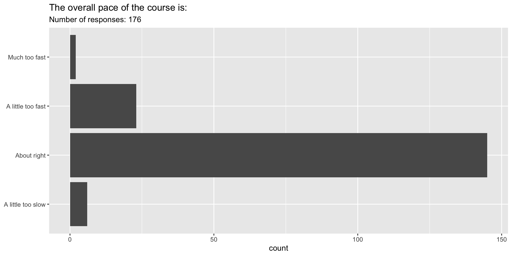
The overall pace of lecture is…
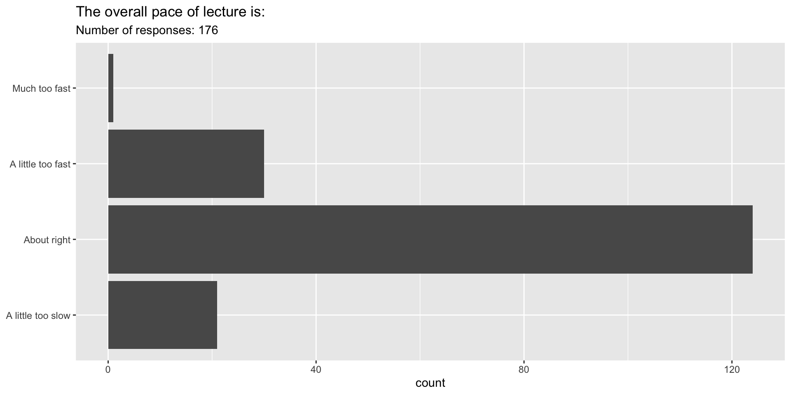
How would you rate your personal level of engagement with the course?
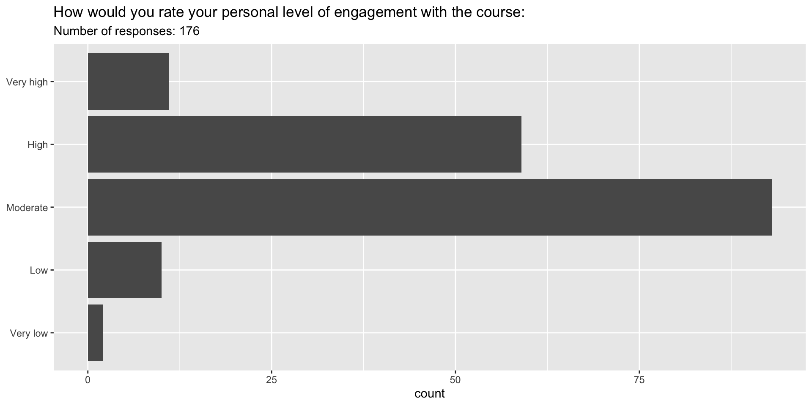
What resources have you used thus far to learn material in the course?
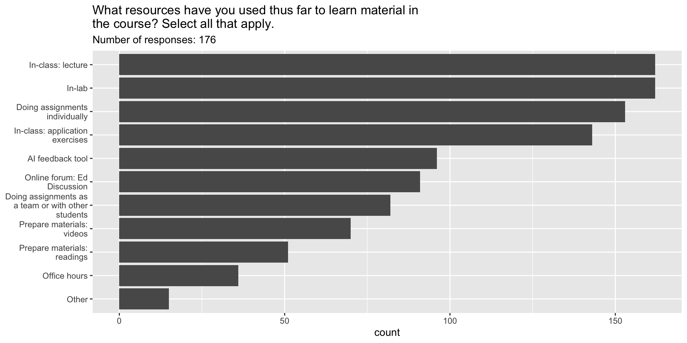
How have you learned the best so far in the class?
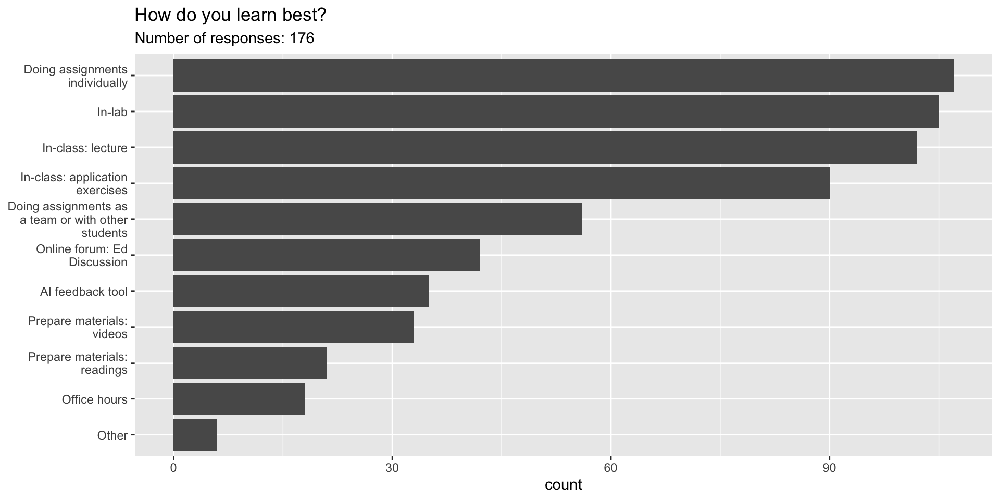
Do you have suggestions for how the lecture time should be split between different activities?
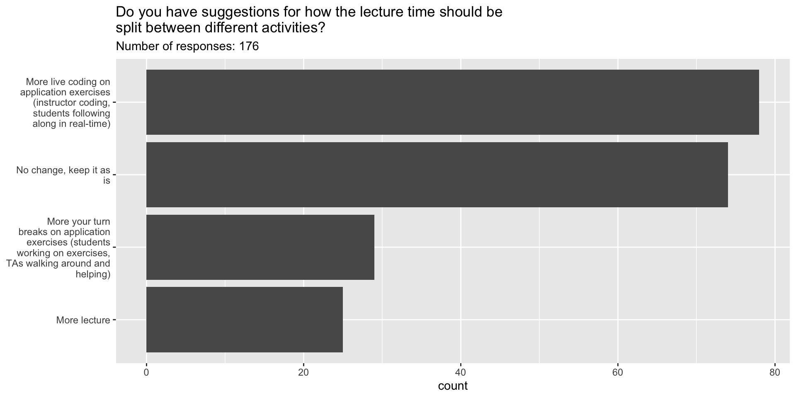
How easy is this course compared to your other courses?
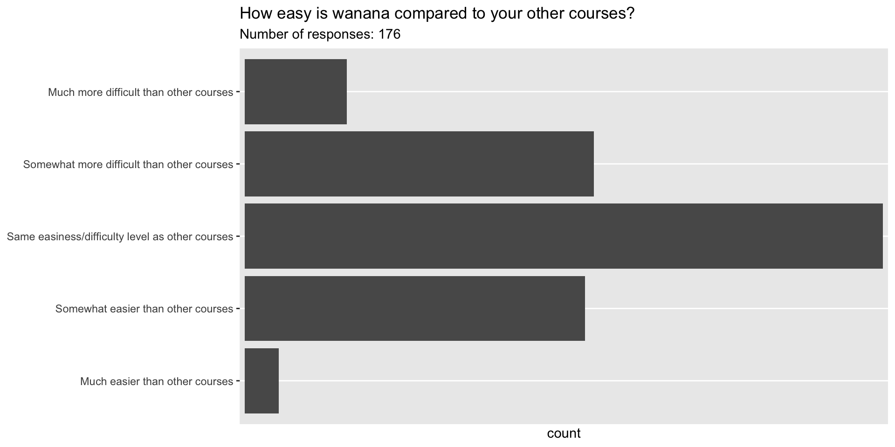
Participate 📱💻
176 / 329 (53.5%) of you responded to the midsemester eval. If the remaining 153 had also responded, how much do you think the results would change?
- Much more positive
- A bit more positive
- No change
- A little more negative
- Much more negative
- Unsure
Scan the QR code or go HERE. Log in with your Duke NetID.
Data collection: the agony and the ecstasy
- 176 / 329 (53.5%) of you responded;
- This is not a random, representative sample!
- Non-response bias: there are likely systematic differences in performance, engagement, attendance, etc between folks that choose to respond and those that don’t;
- Also, some responded before Midterm 1 grades were posted, and some after;
- So…how seriously should I take the results?
Modeling
Agenda
- What is a model?
- Why do we model?
- What is correlation?
Two main goals
Prediction / classification
Description / explanation
Can you think of examples of modeling for prediction vs. modeling for explanation?
Prediction
Let’s drive a Tesla!
Semi or garage?
i love how Tesla thinks the wall in my garage is a semi. 😅
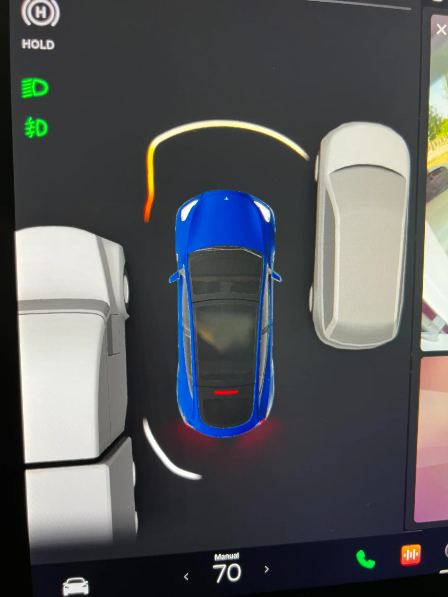
Semi or garage?
New owner here. Just parked in my garage. Tesla thinks I crashed onto a semi.

Car or trash?
Tesla calls Mercedes trash

Description
Leisure, commute, physical activity and BP
Byambasukh, Oyuntugs, Harold Snieder, and Eva Corpeleijn. “Relation between leisure time, commuting, and occupational physical activity with blood pressure in 125 402 adults: the lifelines cohort.” Journal of the American Heart Association 9.4 (2020): e014313.
Leisure, commute, physical activity and BP
Goal: To investigate the associations of different domains of daily‐life physical activity, such as commuting, leisure‐time, and occupational, with BP level and the risk of having hypertension.
Leisure, commute, physical activity and BP
Goal: To investigate the associations of different domains of daily-life physical activity, such as commuting, leisure-time, and occupational, with BP level and the risk of having hypertension.
Methods and Results: In the population-based Lifelines cohort (N=125,402), MVPA was assessed by the Short Questionnaire to Assess Health-Enhancing Physical Activity, a validated questionnaire in different domains such as commuting, leisure-time, and occupational PA.
Leisure, commute, physical activity and BP
Goal: To investigate the associations of different domains of daily-life physical activity, such as commuting, leisure-time, and occupational, with BP level and the risk of having hypertension.
Methods and Results: In the population-based Lifelines cohort (N=125,402), MVPA was assessed by the Short Questionnaire to Assess Health-Enhancing Physical Activity, a validated questionnaire in different domains such as commuting, leisure-time, and occupational PA. Commuting-and-leisure-time MVPA was associated with BP in a dose-dependent manner.
Leisure, commute, physical activity and BP
Goal: To investigate the associations of different domains of daily-life physical activity, such as commuting, leisure-time, and occupational, with BP level and the risk of having hypertension.
Methods and Results: In the population-based Lifelines cohort (N=125,402), MVPA was assessed by the Short Questionnaire to Assess Health-Enhancing Physical Activity, a validated questionnaire in different domains such as commuting, leisure-time, and occupational PA. Commuting-and-leisure-time MVPA was associated with BP in a dose-dependent manner. β Coefficients (95% CI) from linear regression analyses were −1.64 (−2.03 to −1.24), −2.29 (−2.68 to −1.90), and −2.90 (−3.29 to −2.50) mm Hg systolic BP for the low, middle, and highest tertile of MVPA compared with “No MVPA” as the reference group after adjusting for age, sex, education, smoking and alcohol use. Further adjustment for body mass index attenuated the associations by 30% to 50%, but more MVPA remained significantly associated with lower BP and lower risk of hypertension. This association was age dependent. β Coefficients (95% CI) for the highest tertiles of commuting-and-leisure-time MVPA were −1.67 (−2.20 to −1.15), −3.39 (−3.94 to −2.82) and −4.64 (−6.15 to −3.14) mm Hg systolic BP in adults <40, 40 to 60, and >60 years, respectively.
Leisure, commute, physical activity and BP
Goal: To investigate the associations of different domains of daily-life physical activity, such as commuting, leisure-time, and occupational, with BP level and the risk of having hypertension.
Methods and Results: In the population-based Lifelines cohort (N=125,402), MVPA was assessed by the Short Questionnaire to Assess Health-Enhancing Physical Activity, a validated questionnaire in different domains such as commuting, leisure-time, and occupational PA. Commuting-and-leisure-time MVPA was associated with BP in a dose-dependent manner. β Coefficients (95% CI) from linear regression analyses were −1.64 (−2.03 to −1.24), −2.29 (−2.68 to −1.90), and −2.90 (−3.29 to −2.50) mm Hg systolic BP for the low, middle, and highest tertile of MVPA compared with “No MVPA” as the reference group after adjusting for age, sex, education, smoking and alcohol use. Further adjustment for body mass index attenuated the associations by 30% to 50%, but more MVPA remained significantly associated with lower BP and lower risk of hypertension. This association was age dependent. β Coefficients (95% CI) for the highest tertiles of commuting-and-leisure-time MVPA were −1.67 (−2.20 to −1.15), −3.39 (−3.94 to −2.82) and −4.64 (−6.15 to −3.14) mm Hg systolic BP in adults <40, 40 to 60, and >60 years, respectively.
Conclusions: Higher commuting and leisure-time but not occupational MVPA were significantly associated with lower BP and lower hypertension risk at all ages, but these associations were stronger in older adults.
Let’s go
Modeling cars
- What is the relationship between cars’ weights and their mileage?
- What is your best guess for a car’s MPG that weighs 4,500 pounds?
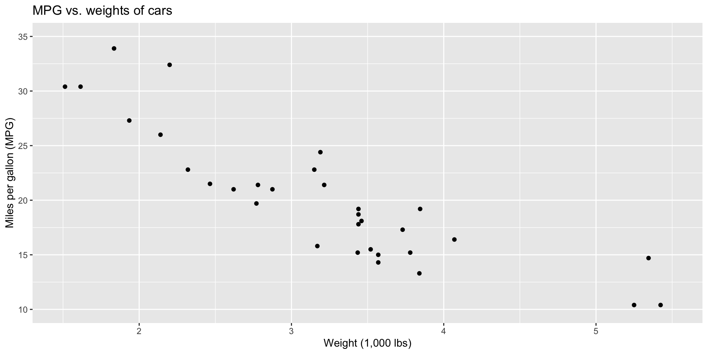
Modelling cars
Describe: What is the relationship between cars’ weights and their mileage?

Modelling cars
Predict: What is your best guess for a car’s MPG that weighs 4,500 pounds?
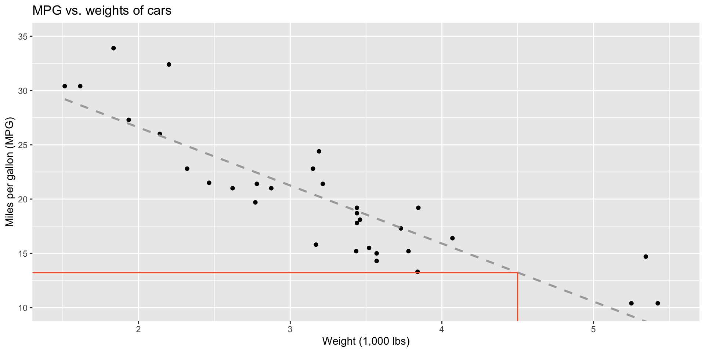
Modelling
- Use models to explain the relationship between variables and to make predictions
- For now we will focus on linear models (but there are many many other types of models too!)
What is a line?

But on a plot…

But in math terms…
\[ \begin{aligned} y &= mx + b \\ \text{Output}&=\text{Slope}\times \text{Input} + \text{Intercept} \end{aligned} \]
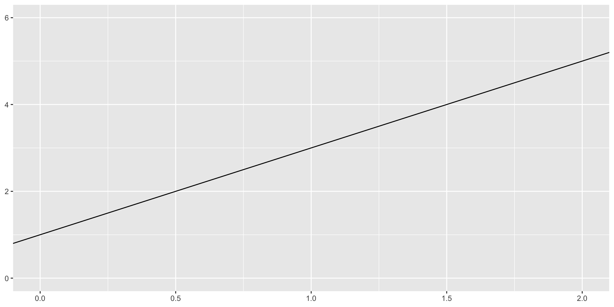
Modelling vocabulary
- Predictor (explanatory variable)
- Outcome (response variable)
- Regression line
- Slope
- Intercept
- Correlation
Predictor (explanatory variable)
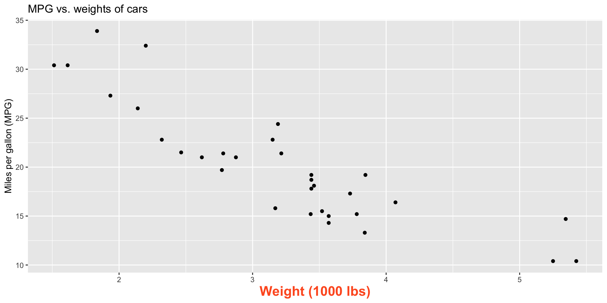
Outcome (response variable)
| mpg | wt |
|---|---|
| 21 | 2.62 |
| 21 | 2.875 |
| 22.8 | 2.32 |
| 21.4 | 3.215 |
| 18.7 | 3.44 |
| 18.1 | 3.46 |
| ... | ... |
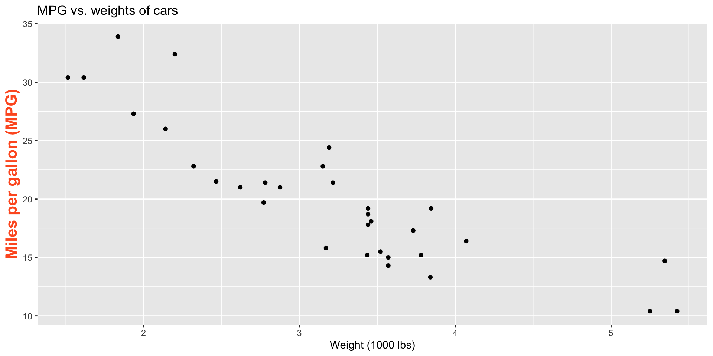
Regression line

Regression line: slope
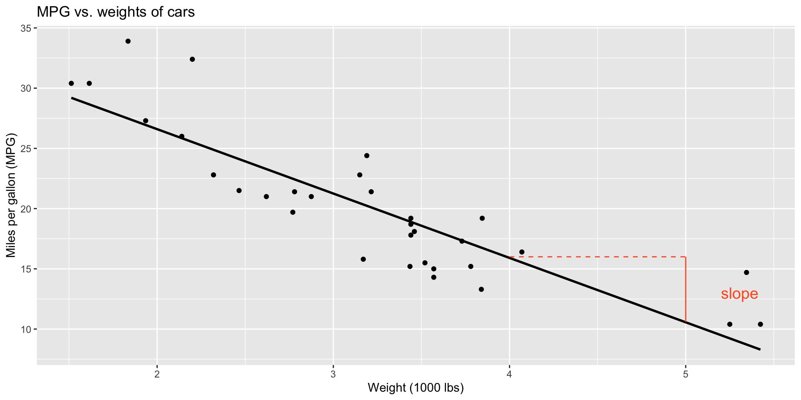
Regression line: intercept
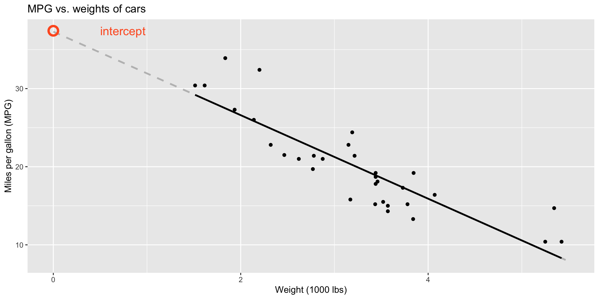
Correlation
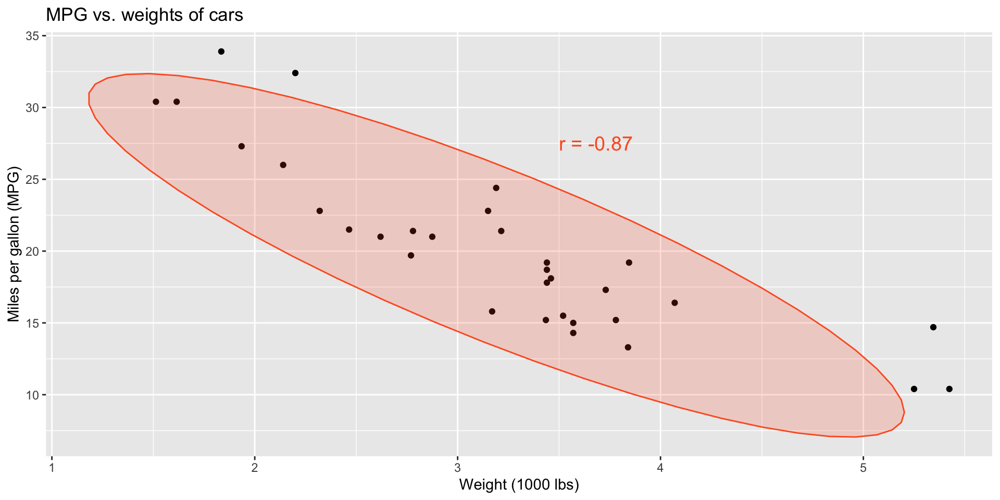
Correlation
- Measures the strength and direction of the linear association between two numerical variables;
- Tells you how tightly the points cluster around a straight line;
- Ranges between -1 and 1;
- Same sign as the slope.
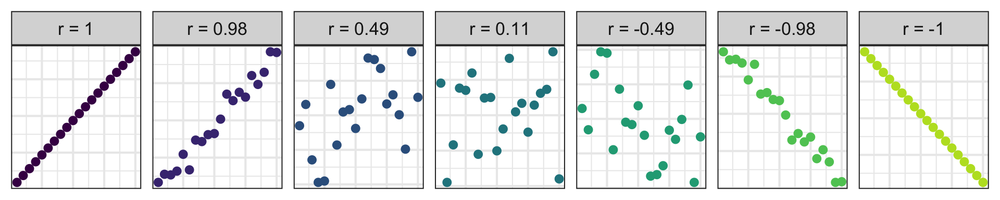
Participate 📱💻
Which of the following is the best guess for the correlation between the two variables on the plot below?
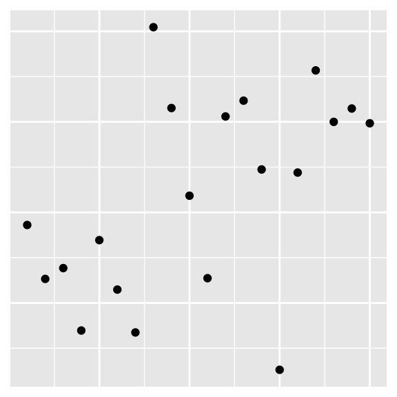
-0.95
-0.53
0.00
0.4
0.80
Scan the QR code or go HERE. Log in with your Duke NetID.
New command: cor
Practice!
https://www.rossmanchance.com/applets/2021/guesscorrelation/GuessCorrelation.html
(Just the sort of pain in the ass visual intuition crap that JZ is liable to put on an exam.)
Visualizing the model

Visualizing the model

Visualizing the model

Visualizing the model

Don’t forget: Always Be Visualizing!
Anscombe’s Quartet
Dataset I
x y
1 10 8.04
2 8 6.95
3 13 7.58
4 9 8.81
5 11 8.33
6 14 9.96
7 6 7.24
8 4 4.26
9 12 10.84
10 7 4.82
11 5 5.68Dataset II
x y
1 10 9.14
2 8 8.14
3 13 8.74
4 9 8.77
5 11 9.26
6 14 8.10
7 6 6.13
8 4 3.10
9 12 9.13
10 7 7.26
11 5 4.74Dataset III
x y
1 10 7.46
2 8 6.77
3 13 12.74
4 9 7.11
5 11 7.81
6 14 8.84
7 6 6.08
8 4 5.39
9 12 8.15
10 7 6.42
11 5 5.73Dataset IV
x y
1 8 6.58
2 8 5.76
3 8 7.71
4 8 8.84
5 8 8.47
6 8 7.04
7 8 5.25
8 19 12.50
9 8 5.56
10 8 7.91
11 8 6.89Very different
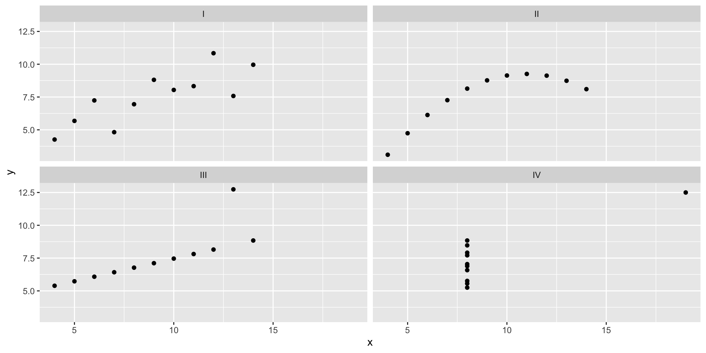
But it’s the same line…

…and the same summary statistics.
anscombe_tidy |>
group_by(set) |>
summarize(
xbar = mean(x),
ybar = mean(y),
sx = sd(x),
sy = sd(y),
r = cor(x, y)
)# A tibble: 4 × 6
set xbar ybar sx sy r
<chr> <dbl> <dbl> <dbl> <dbl> <dbl>
1 I 9 7.50 3.32 2.03 0.816
2 II 9 7.50 3.32 2.03 0.816
3 III 9 7.5 3.32 2.03 0.816
4 IV 9 7.50 3.32 2.03 0.817Application exercise
ae-15-icecover-model
Go to your ae project in RStudio.
If you haven’t yet done so, make sure all of your changes up to this point are committed and pushed, i.e., there’s nothing left in your Git pane.
If you haven’t yet done so, click Pull to get today’s application exercise file: ae-15-icecover-model.qmd.
Work through the application exercise in class, and render, commit, and push your edits.
New commands introduced today
In base R:
-
cor: compute correlation between two numerical variables;
In ggplot2:
-
geom_smooth: add model fit to scatterplot;
In the new package tidymodels:
-
linear_regandfit: estimate linear model; -
tidy: cute lil’ summary table of model output -
predict: use estimated model to predict.